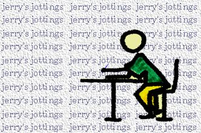

| Jerry's Jottings |

Welcome to the page where I can really tell it like it is. More than just a diary style column I
intend to give you the true lowdown on the Brighton scene...........
| entries on this page for: |
|---|
| 15th May |
date: 15th May 1996 outporings previous to this date can be found in the archives
Well, once again it's taken me a hell of a long time to get back to you all!! And for a lot of
people this could be their first reading of the jottings as they do so from the cBuzz party @ The CYBAR -
Welcome to you all, and I hope you enjoy what I have to say enough for you to make the net connection regularly
to read my thoughts(!). Why not come back to the CYBAR again.
Apologies to those who have been waiting for this posting (and yes, I have had e-mails urging me on), this
party organisation business seems to take up far more time than you'd imagine - but at least in the course of
it all I met someone who I reckon I might bring in to organise the second birthday party! Delegation can
sometimes really ease the pressure - but no-one seems to want to have the nervous breakdown for me; some
things you just can't delegate.
Summer in Brighton is threatening to be a good one, Dance
Parades, Wicked radio stations - Swell FM, superbly planned live acts
and club nights at the Concorde, sexy looking Club nights at the Warehouse, more diversity with the Retreat, the ever continuing party offerings from Positive Sounds, the Brighton Festival of Freedom in August, and
the list goes on. Rest assured if you want to get the true picture of this happening town of Brighton, and as
it happens, then cBuzz will be here to guide you through the 'happenings'
A big thankyou here to all who've helped get cBuzz through its' first 14 months (yeah, I know the birthday
party's late but we were waiting for the Cybar to open up - and it's always a great time to have a party in
Brighton during the International Festival). The reason for that is that this 'wonderful' Festival of ours
seems to offer so very little for the people catered to by cBuzz; the reason we just don't really cover a lot
of what's happening. Maybe next year we'll put together a guide to those (limited) events that will be of
interest (the FREE ones!!!). I've had my fill of arty types and opera lovers. This invasion by the middle
classes is possibly just a little wearing when for 11 months of the year it's hard working Brighton people
that make this town tick. Where's the festival for US (AND the fireworks - FREE - were disrupted by an IRA
bomb scare; to be re-scheduled during the HUGE Essential Festival). Well done Ish for doing what many
Brightonians have tried to do for years. I remember the USTA bars carnival from which this has grown; and
grown it certainly has. Just a shame that there is SO much on; you could spread all the acts out throughout
every weekend of the year and still run out of weekends. How about it then, Ish, a week long Festival for next
year? Meantime a supply of tickets for all the cBuzz crew will ensure full coverage of all that's going on in
the illustrious pages of cBuzz.
Before I go a final message to the party goers - now you've seen the actuality of cBuzz; rather than me
drunkenly telling you all about it late at night in some slub somewhere, you may see the potential. This can
only be realised with your input. From film reviewing to show reviewing to column writing your assistance is
needed. cBuzz has got through it's first year and achieved a great deal. We're not going away now and we're up
for development in many areas. We're not aiming to be a conclusive guide to Brighton; but we want to document
'our' Brighton as progressively as possible. I've been accused of representing the 'crusty' side of Brighton
and if that means the side of Brighton that is exciting and vibrant then I accept that charge. The local clubs
and bars and promoters seem keen to work with me and their support, both now and for the future, looks set to
ensure we survive. Our ideas are fresh and you won't find us playing catch-up with other websites. We might
not have loads of (slow to load) flashy graphics, scrolling little bittys, or even try to incorporate all the
possible new features of Netscape etc just to prove we can do it. What we have is CONTENT that people have a
genuine interest in finding out. We shall continue to be content driven 'cause we believe in utilising the
internet both to give info of interest and to provide the space to put a real (not virtual) Brighton
perspective on the net.
As for me I move on, albeit briefly; the jottings shall continue (and possibly be a little more regular and
less erratic). Dave (believe me, your surname will now be cBuzz!) is taking on the donkey work as I
seek to regain a life away from the continual glare of the computer and attempt to deliver Brighton's first
multi-media approach to local radio. In August I shall have my first holiday in a long while and I truly
cannot wait. In the meantime Swell FM follows. Thank you all for your
indulgences, and I can only apologise for the number of unwritten rants/moans/commentaries I have wanted to
write; but forced through the passage of time to discard.
| what's on the walkman?: |
|---|
| Ian Dury - New Boots & Panties |
| Creel (Brighton unique ambient duo) |
| visit the jottings archives: | ||
|---|---|---|
| up to 31st August 1995 | September 1995 | October 1995 |
| November 1995 | December 1995 | Jan/Feb 1996 |
| March 1996 |